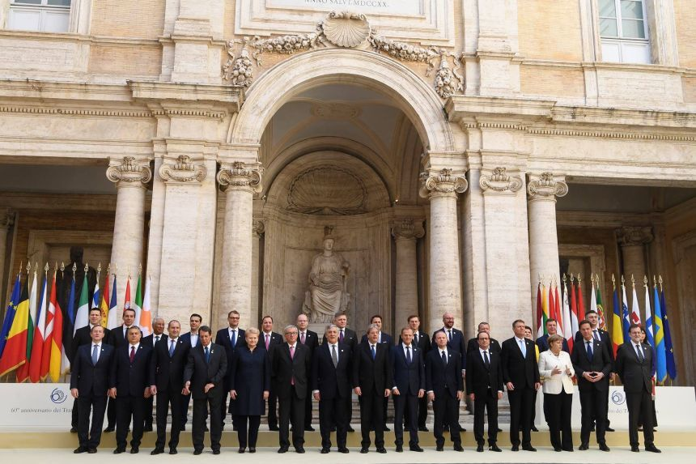
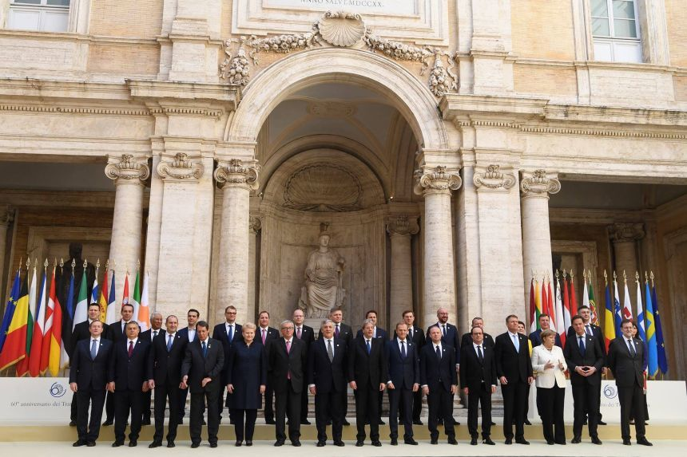

După Al Doilea Război Mondial, integrarea europeană a fost văzută ca un antidot al naționalismului extremist care a devastat continentul.
Într-un discurs ținut la 19 septembrie 1946 la Universitatea din Zürich, Elveția, Winston Churchill a mers mai departe și a promovat
apariția Statelor Unite ale Europei.
În 1952, în cadrul Consiliului Europei, șase națiuni au decis să meargă mai
departe și au creat Comunitatea Europeană a Cărbunelui și Oțelului, care a fost declarată a fi "un prim pas către o Europă federală".
Oameni vizionari precum Alcide De Gasperi din Italia, Jean Monnet și Robert Schuman din Franța și Paul-Henri Spaak din Belgia au înțeles
că oțelul și cărbunele erau cele două industrii esențiale pentru ducerea unui război și că prin legarea industriilor naționale,
un viitor război între națiunile lor ar fi fost imposibil. Acești bărbați și alții sunt oficial creditați ca părinți fondatori ai Uniunii Europene.
În 1957, Belgia, Franța, Italia, Luxemburg, Olanda și Germania de Vest au semnat Tratatul de la Roma, care a creat Comunitatea Economică Europeană
și a stabilit o uniune vamală. De asemenea, au semnat un alt pact de creare a Comunității Europene a Energiei Atomice pentru cooperarea în dezvoltarea
energiei nucleare. Ambele tratate au intrat în vigoare în 1958.
În 1973, Comunitățile au fost extinse pentru a include Danemarca, Irlanda și Regatul Unit. Norvegia a negociat să se alăture în același timp,
însă alegătorii norvegieni au respins aderarea prin referendum. În 1979, au avut loc primele alegeri directe în Parlamentul European.
Grecia s-a alăturat în 1981, Portugalia și Spania au urmat în 1986. În 1985, Acordul Schengen a pregătit calea pentru crearea frontierelor
deschise fără controale de pașapoarte între majoritatea statelor membre și unele state ne-membre. În 1986, steagul european a început să
fie utilizat de CEE și a fost semnat Actul Unic European.
În 1990, după căderea Blocului de Est, fosta Germanie de Est a devenit parte a Comunităților ca parte a unei Germanii reunite.
Încercările de a rezolva problemele și de a face o UE mai eficientă și mai coerentă au avut un succes limitat.
Odată cu extinderea planificată pentru a include fostele state comuniste din Europa Centrală și de Est, precum și Cipru și Malta,
criteriile de la Copenhaga pentru aderarea la UE au fost convenite în iunie 1993. Extinderea UE a introdus un nou nivel de
complexitate și dezacorduri. În 1995, Austria, Finlanda și Suedia au aderat la UE.
În 2002, bancnotele și monedele euro au înlocuit monedele naționale în 12 state membre. De atunci, zona euro a crescut și cuprinde 19 țări.
În 2004, UE a înregistrat cea mai mare extindere când Cipru, Republica Cehă, Estonia, Ungaria, Letonia, Lituania, Malta, Polonia, Slovacia și
Slovenia au aderat la Uniune.
În 2007, România și Bulgaria au devenit membre ale UE. În 2012, UE a primit Premiul Nobel pentru Pace pentru că
a contribuit la promovarea păcii și reconcilierii, a democrației și a drepturilor omului în Europa. În 2013, Croația a devenit cel de-al 28-lea membru al UE.
De la începutul anilor 2010, coeziunea Uniunii Europene a fost testată de mai multe aspecte, inclusiv o criză a datoriilor în unele țări din zona euro,
creșterea migrației din Orientul Mijlociu și retragerea Regatului Unit din UE. Un referendum a avut loc în 2016 în Regatul Unit privind apartenența la
Uniunea Europeană, 51,9% dintre participanți votând pentru părăsirea Uniunii.
 
